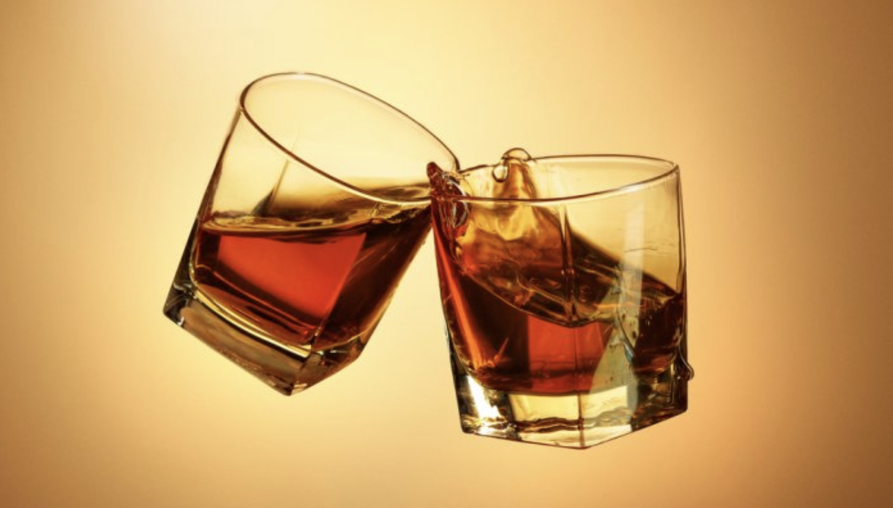
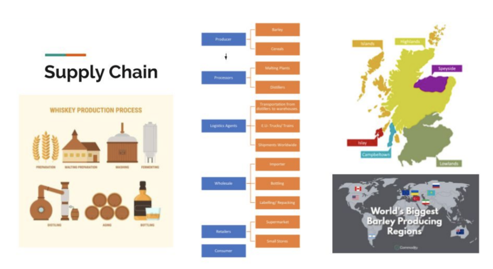
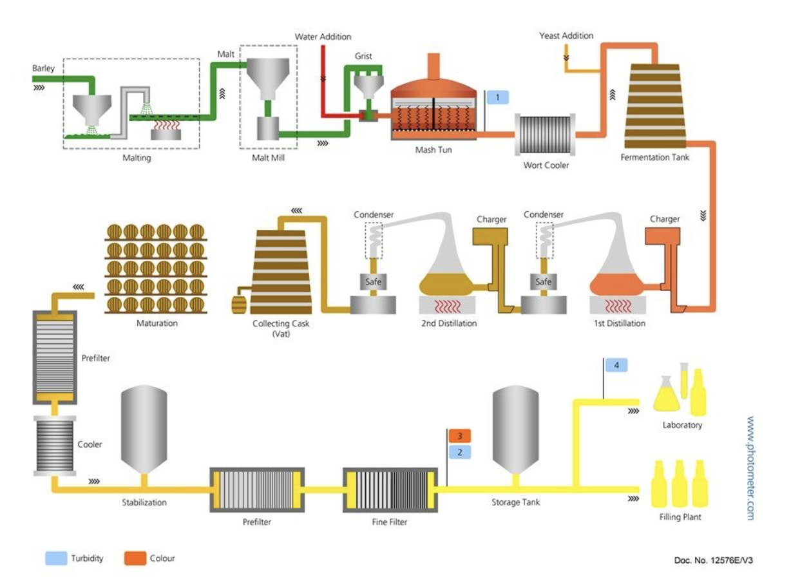
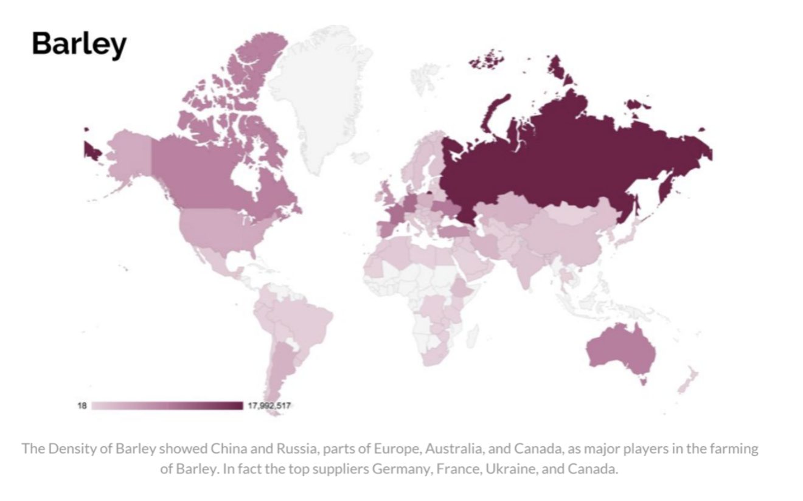
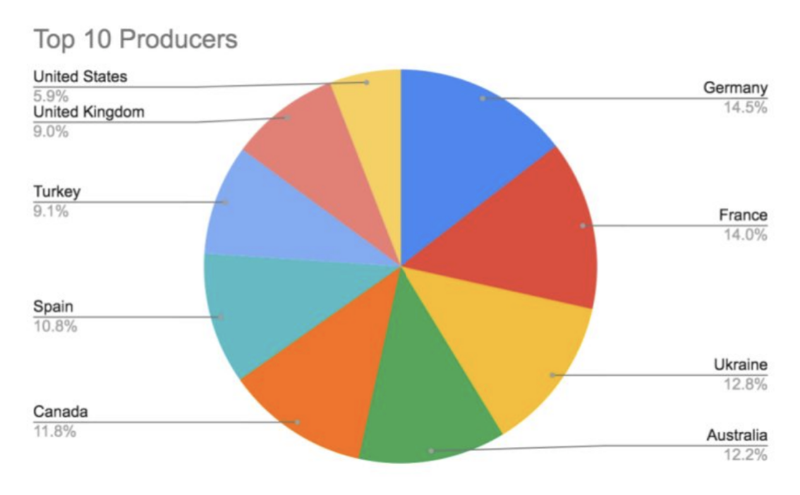
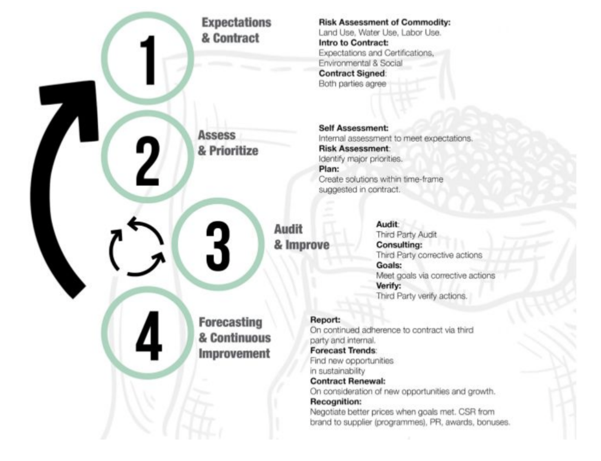
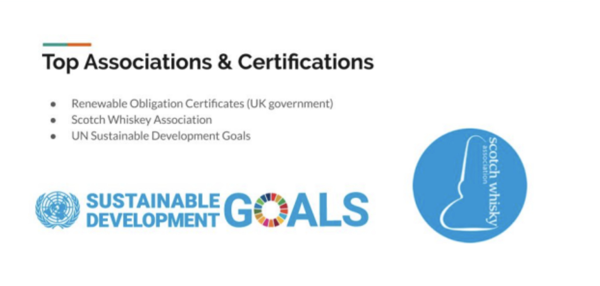
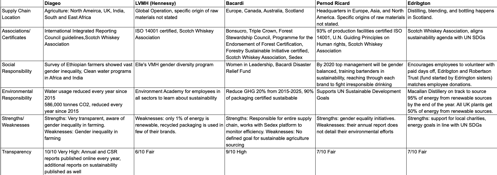
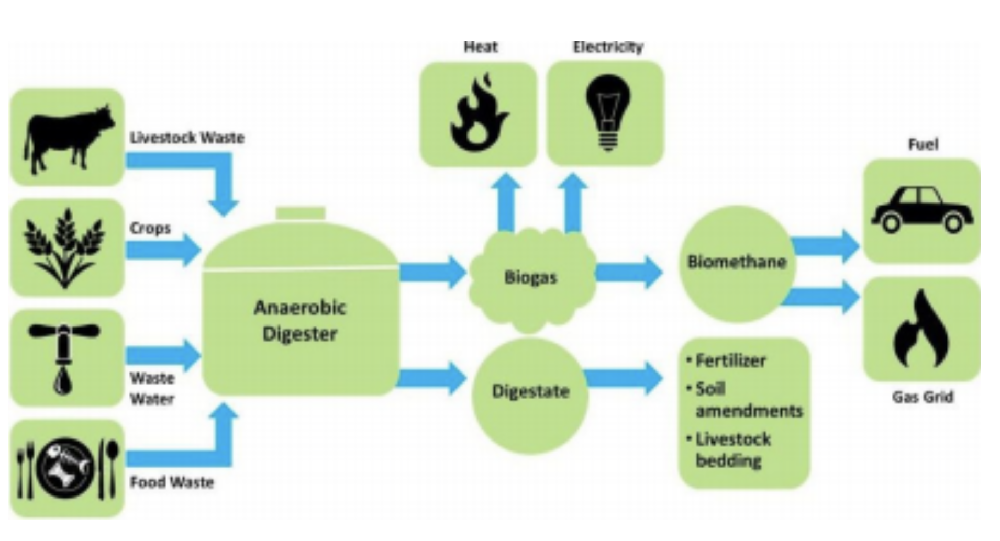
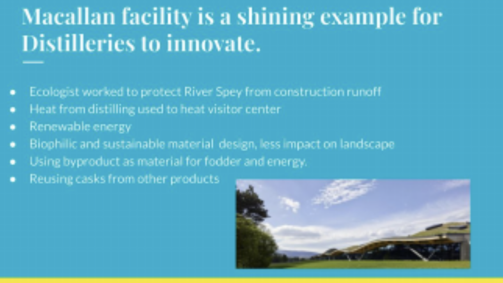

Definition

A distilled spirit comprised of Water, Barley and other grains that may include corn or wheat. There are several distinctive steps involved in the production of scotch whisky; preparation, mashing, fermenting, distilling, aging and bottling.
Scotch has been around for hundreds of years. It is an intrinsic part of Scotland and Scottish identity, as something refined and separate from all whiskeys. The flavors of whiskey are influenced by air, and there are different flavors associated with different regions, affected by the smell of the salt near the sea, the rivers or the hills. As a solid part of the alcoholic beverage market, it behooves us to take a closer look into the supply chain, analyze the life cycle assessment, create some important benchmarks in the industry, and note where innovations are currently being made.
The first record of a distillery was in 1494, but Scotch was already well established by then. Today, scotch is a combination of old traditions and modern inventions in order to scale the product for commercial sale. The intense process of making scotch can be overwhelming to many people, and most of us participate right when it’s over, but there are still a few distinctive steps that we can go over to focus on as we familiarize ourselves with this product: preparation, mashing, fermenting, distilling, aging, and bottling.
Second only to water, barley is our most material product. The quality of a finished scotch starts with the quality of the raw material. Scotch whiskey can be made by a single distiller using water and barley or by blending at least one single malt with whiskeys made from other grains, these are called blended scotch. There are also blended malts, made by blending two or more malt whiskeys.
Ultimately, each Scottish distiller has its own unique specifications for processing and blending, giving different brands of Scotch whisky individual distinction. (Gifford’s Guide, 201) Subsequently, scotch whisky law states that a product can only be called \"scotch\" if it’s distilled in Scotland and matured within the country for a minimum of three years.
Supply Chain Overview
- Second only to water, barley is our most material product. The quality of a finished scotch starts with the quality of the raw material. Scotch whiskey can be made by a single distiller using water and barley or by blending at least one single malt with whiskeys made from other grains, these are called blended scotch. There are also blended malts, made by blending two or more malt whiskeys.
*Ultimately, each Scottish distiller has its own unique specifications for processing and blending, giving different brands of Scotch whisky individual distinction. (Gifford’s Guide, 201) Subsequently, scotch whisky law states that a product can only be called \"scotch\" if it’s distilled in Scotland and matured within the country for a minimum of three years.
*The Process of making scotch starts with malting, which begins by steeping barley in water and spreading it on malting floors to germinate. This germinating barley is turned regularly to prevent the buildup of heat. After 6 to 7 days of germination the barley, now called green malt, goes to the kiln, or a furnace of some type, for drying.
*Following the malting process is the mashing of the dried malt that is ground into course flour and mixed with hot water in the mash cask. The water is added in 3 stages and gets hotter at each stage and rising to almost boiling point. The mash is stirred, helping to convert the starches to sugar. After mashing, the sweet sugary liquid is known as wort.
*The third step is the fermentation process. Yeast is added and fermentation begins. The living yeast feeds on the sugars, producing alcohol and small quantities of other compounds known as congeners, which contribute to the flavor of the whisky.After fermentation the wash contains 6-8% alcohol by volume.
*Following fermentation, the alcohol is distilled. Malt Whisky is distilled twice in large copper Pot Stills. Whisky must then be matured after distillation has been completed. The new spirit is filled into casks of oak wood. The permeability of the oak allows air to pass and evaporation takes place. The period of maturation for scotch is at least three years. Whisky is affected by the size of casks used, the strength at which the spirit is stored, the smell of the air around it, the temperature, and humidity of the warehouse.
*The final stage in the production of Scotch Whisky is the packaging and dispatch. Most Scotch are marketed at home and abroad in branded bottles. For commercial reasons Scotch Whisky can be shipped overseas in bulk.


Recent & Relevant News
Legal Issues & Major Controversies
Mapping the Supply Chain
The Scotch Whiskey supply chain starts with the producer of the raw material (barley/grains), then processors gather the grain for malting and distilling. Scotch can be labeled and bottled in Scotland or transported on large caskin glass lined stainless steel tanks. Wholesale facilities then sell the scotch to retailers (supermarkets) and this is when the customers have access to the product. The customer drinks the scotch and the bottle is either discarded in regular trash bin or recycled properly.
The scotch whiskey supply chain shows great potential to become more sustainable. However currently the industry is not doing enough application of material health at the beginning stages of the product life cycle. There are some standards on carbon management and water stewardship across the supply chain, but not enough transparency to validate the work towards less environmental degradation. It would be beneficial for the scotch whiskey enterprise executive team to commit to more responsible labor and sourcing standards, especially in the production of the raw materials.


Supplier Engagement Model
Our team developed a supplier engagement model that is meant to advise enterprises, like those we study in the Scotch business, that can help them come up with a set of standards on what to expect from suppliers in terms of labor standards, human rights, health and safety, environmental protection and business integrity. We advise through the supplier engagement model presented that any supplier gain agreement on, and compliance with, a set of Responsible Standards that are socially and environmentally viable. Our model encourages and applies a reward system to suppliers who implement even higher standards within their operations. Suppliers are also expected to promote and assess compliance with Responsible Sourcing Standards with their own suppliers.

We advise suppliers to join SEDEX, the largest collaborative platform for sharing ethical, supply-chain data. This organization provides a third-party Audit Management Service which enables suppliers to drive and report in accordance with an audit program based on Ethical Trade Audit Protocol (SMETA) (Sedex, 2019).
Governance

Benchmarks
Our study began by taking a closer look at five of the major companies that make scotch whiskey. These companies are Diageo, LVMH, Bacardi, Pernod Ricard and Edrington.
Our research shows that in some capacity all five companies are working to improve in the areas that relate to environmental and social responsibility. They all have Corporate Responsibility (CR) targets that work on improving their environmental and social impacts. Each company is part of major national and international associations such as the Scotch Whiskey Association, the United Nations International Labor Organization (ILO), the United Nations Universal Declaration of Human Rights, the Forest Stewardship Council and some are Certified ISO 14001. All have a sustainable agenda that aligns with the United Nations Sustainable Environmental Goals implemented within their CR standards.
We did find that there is very little transparency from all companies regarding the extraction of raw materials. We focus primarily on barley, given that it’s a key raw material for scotch production and it grows all over the world. The challenge with barley being grown all over the world is that all countries where the crop is grown have their own agriculture standards and regulations that must be studied individually to truly find what is happening in the fields. Giving the grain industry thorough attention can answer a myriad of questions not only for the alcohol production industry, which only accounts for 16% of the grains grown, but also to the many other industries, specifically cattle feed that account for over 70% of the grains grown worldwide (Zhou, nd).

Monitoring
*Some makers work with SEDEX to monitor efficiency *Some makers ISO 14001 certified *Some makers participate in gender diversity programs - such as Elle’s VMH
Verification
Reporting
Life Cycle Assessments
When observing actions along the supply chain in growing, harvesting, and transporting all the ingredients for the product, CO2 emissions and fuel usage are critical. As most, if not all transportation companies rely on fossil fuels, the carbon footprint of a single bottle of scotch is overwhelming when considering the larger scale it’s being produced at. Water pollution (water being the second most material item), is at risk via agriculture through run-off of pesticides and herbicides.
As a company, each production site and office must consider energy efficiency, land usage, and packaging. Packaging became a top priority as we continued on into our Life Cycle Assessment, in regards to its impact on the environment. According to an LCA pertaining the alcohol and beverage industry done by David Amienyo, from the School of Chemical Engineering at Manchester University, along with other supporting research, we find that the major environmental impacts of scotch whiskey come from the growing and extraction of the raw material and during the process of malting and distilling stage. (pg.142). Bottling and labeling follow contributing a significant amount to the Global Warming Potential ( GWP) of the scotch supply chain.
Other Challenges & Impacts
Social risks pertain to human rights that are being violated throughout the supply chain, mostly in the production of raw materials, specifically in agriculture. We find the greatest challenge lies with migrants that are taken advantage of. This population is particularly vulnerable to human rights abuses. To ensure that human rights are respected for all workers across the supply chain any enterprise must take action to ensure there are no forms of slavery or human trafficking in their supply chain. A good way to begin is by following the standards given by the United Nations Universal Declaration of Human Rights.
Other challenges include:
Product challenges:
- Underage drinking
- Drinking and driving
- Harmful drinking
- Inherent gender inequality in production of raw materials
Company challenges:
- Diversity in the workplace (specifically gender equality in top management)
- Diageo in particular has made great strides and the Board of Directors is currently 50% male and 50% female, while in contrast, Louis Vuitton Moët Hennessy has 80% male executive directors and 20% female.
When observing actions along the supply chain in growing, harvesting, and transporting all the ingredients for the product, CO2 emissions and fuel usage are critical. As most, if not all transportation companies rely on fossil fuels, the carbon footprint of a single bottle of scotch is overwhelming when considering the larger scale it’s being produced at. Water pollution (water being the second most material item), is at risk via agriculture through run-off of pesticides and herbicides.
As a company, each production site and office must consider energy efficiency, land usage, and packaging. Packaging became a top priority as we continued on into our Life Cycle Assessment, in regards to its impact on the environment.
Innovations
Evolving Technologies: *High Gravity Brewing, is a fairly new emerging technology being used primarily by the beer industry. It is a procedure that employs wort at higher than normal concentration and consequently requires dilution with water (usually specially treated including being deoxygenated) at a later stage in processing. This means, increased production demands can be met without expanding brewing, fermenting and storage facilities.
Biogas Technologies: *Distilleries are also taking care of their waste by sending their byproducts to be used as animal fodder, or to be turned into fuel:

Green Building Design:
The Macallan distillery is a shining example of what we hope to see more in the future of construction design for this type of facility.. The application of LEED construction standards along with designing a space according to the principles of a circular economy can create equal economic, social and ecological benefits

Innovating Agriculture:
Innovating agriculture will reduce water usage, lower the impact on local ecosystems, and rebuild soil to trap carbon. Drone tractors being used in the U.K. right now are decreasing impact on soil and increasing production for smaller farms. Large brands may be able to demand their suppliers follow certain environmental practices, but standards must still be negotiated constantly with government groups.
Conclusions
Environmentally responsible logistics standards must be carefully monitored, and more research dedicated to environmental impact of the agro sector are necessary. In addition we advise that more research and investment in new technologies, renewable energy infrastructure & production, as well as clean water system technologies can support the push towards the sustainability of this industry
Scotch is a local product. It’s the water of life. It’s intrinsically rooted in the country itself. We owe it to the history and future of this product to innovate as much as possible while remaining steadfast to the people and products we enjoy and love. We owe it to this heritage dram to innovate with technology, appreciate the history and story behind it’s local nuances. Educate the consumer about the product and it’s process, and to constantly evaluate along all our supply chains to improve our impacts in the world, and consistently deliver quality scotch to the consumer.
Sources and References
#Difford’s Guide, For Discerning Drinkers. (nd). How is Single Scotch Whiskey Made? https://www.diffordsguide.com/encyclopedia/1119/bws/how-is-single-malt-scotch-whisky-made . A well written article that explain the entire process of scotch whiskey production. The author begins by explaining the importance of selecting high quality raw materials up the final stage of production when the malt is mixed with purified water to reduce the alcoholic strength to bottling strength. #The Scotch Whiskey Experience Company. (nd). Whiskey Making, Scotch Whiskey, “The Water of Life”. https://www.scotchwhiskyexperience.co.uk/about-whisky/making The Scotch Whisky Experience is a company from the UK with a mission to bring knowledge and education to the public about scotch whiskey. At their facility they have interactive exhibitions, that show how scotch is made along with scotch whiskey tastings. On the company website they wrote a very detailed description on how whiskey is made and processed. #Zhou, M.X. (nd). Barley Production and Consumption. https://www.haifa-group.com/sites/default/files/article/Barley%20Production%20and%20Cons umption.pdf A paper written by M.X Zhou from the University of Tasmania, Institute of Agricultural Research that describes barley production and consumption worldwide during the 2000’s. A very in depth study that helps the reader analyze where is barley mostly produced and consumed. #Sedex. (nd) Empowering Responsible Supply Chains. https://www.sedexglobal.com The Supplier Ethical Data Exchange (Sedex) is a not-for-profit, membership organization that leads work with buyers and suppliers to deliver improvements in responsible and ethical business practices in global supply chains. Sedex was founded in 2001 by a group of retailers to drive convergence in social audit standards and monitoring practices. Sedex aims to ease the auditing burden on suppliers through the sharing of audit reports and to drive improvements in supply chain standards. SMETA (Sedex Members Ethical Trade Audit) is the audit methodology created by the Sedex membership to give a central agreed audit protocol which can be confidently shared. Created by the Associate Auditor Group (AAG) and involving multi-stakeholder consultation, it draws from practices defined by Sedex members and by the Global Social Compliance Programmed (GSCP) www.gscpnet.com. #Human Rights Watch. (nd). Migrants. https://www.hrw.org/topic/migrants# Human Rights Watch, is a non-profit registered in the United States that investigates and reports on abuses happening all over the world. They have activists who are country experts, lawyers, journalists, and others who work to protect the most at risk, from vulnerable minorities and civilians in wartime, to refugees and children in need. Their advocacy is directed towards governments, armed groups and businesses, pushing them to change or enforce their laws, policies and practices. To ensure their independence, they refuse government funding and corporate ties #Bacardi Limited. (nd). Corporate Responsibility at Bacardi. https://www.bacardilimited.com/corporate-responsibility/ Bacardi continues to have a strong presence in the spirits industry. With Bacardi Limited Bacardi initiated the “Good Spirited” Campaign, which is leading their corporate responsibility Global Goals. Bacardi is the owner of several scotch whiskey brands and for that reason it’s worth looking at what this enterprise is doing to help support future social and environmental goals that affect scotch whiskey. #LVMH Environmental Report.(2018). Environmental Excellence. https://www.lvmh.com/2018interactiveenvironmentalreport/en/12-LVMH-Environmental-Rep ort-2018.html#/page/14 A very comprehensive report that analyze and report LVMH environmental impact, to include product design, shipment of raw materials, manufacturing and marketing and after sale services. Strategic objectives were developed along with this report to establish a sustainable supply stream and decrease greenhouse gas emissions contributing to global warming. #International Labor Organization (2019). About the ILO. https://www.ilo.org/global/lang--en/index.htm A U.N. agency that brings together governments, employers and workers of countries 187 countries to set labor standards, develop policies and programs that promote decent work for all women and men. Their main mission aims to promote rights at work, encourage decent employment opportunities, enhance social protection and strengthen dialogue on work-related issues. #United Nations.(nd).Universal Declaration of Human Rights. https://www.ohchr.org/EN/UDHR/Documents/UDHR_Translations/eng.pdf The Universal Declaration of Human Rights (UDHR) is a milestone document in the history of human rights. Drafted by representatives with different legal and cultural backgrounds from all regions of the world, the Declaration was proclaimed by the United Nations General Assembly in Paris on 10 December 1948 (General Assembly resolution 217 A) as a common standard of achievements for all peoples and all nations. It sets out, for the first time, fundamental human rights to be universally protected and it has been translated into over 500 languages.